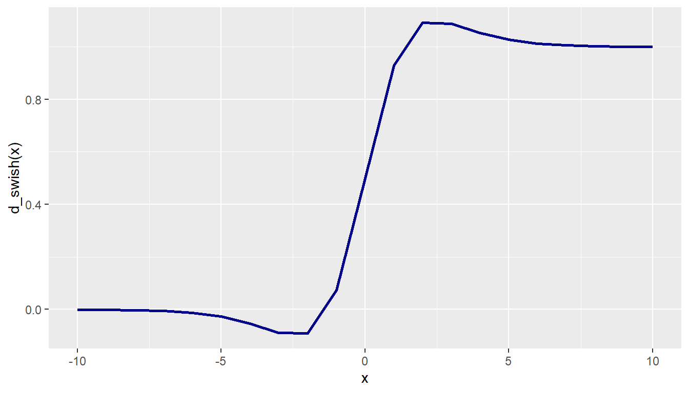

# Your `d_swish()` function hered_swish <-function(x) { sigmoid_x <-1/ (1+exp(-x))return(sigmoid_x + x * sigmoid_x * (1- sigmoid_x))}x <--10:10y <-d_swish(x)tbl_swish <-tibble(x, y)ggplot(tbl_swish, aes(x, y)) +geom_line(color ="darkblue", linewidth =1) +labs(x ="x", y ="d_swish(x)")

Figure 1: Gradient of Swish Activation Function
Comparison of swish() and derivative swish()
The Swish activation function and the derivative serve different roles for training neural networks. The Swish function is used in the forward pass to introduce non-linearity to allow models to learn complex patterns. The smoother and non-monotonic shape often leads to better training performance than traditional functions like ReLU, especially in deeper networks. The derivative of Swish is instead used during the backward pass for gradient calculation. It requires more computation due to additional sigmoid evaluations and multiplications. However, the benefits in training stability and accuracy outweigh the reduced computational efficiency. Thus, Swish is better for having good learning performance, while the derivative provides more effective backpropagation.
Toy Examples Calling swish() and relu()
# Fill in the `...` with your code# Code chunk to obtain the maximum ID in your team max_id <-max(2400740, 2400989, 2401130, 2401641, 2402429)set.seed(max_id)random_vector <-runif(5, min =-10, max =10)activated_vector <-swish(random_vector)round(random_vector, 2)
Yes, this example supports the claim that Swish helps avoid dead neurons. Swish allows negative inputs to produce small non-zero outputs, which helps keep neurons active and trainable, especially during backpropagation. Whereas RELU will output zero for all negative inputs, effectively “killing” off those neurons and preventing them from learning. Thus, Swish allows for more neurons to remain active and contribute to learning, which can lead to better model performance.
Exploring Other Activation Functions
Sigmoid: A smooth, S-shaped function that maps input values into the range (0, 1). . It’s useful for binary classification problems but can suffer from vanishing gradients for large positive or negative inputs. \[
\sigma(x) = \frac{1}{1 + e^{-x}}
\]
ELU (Exponential Linear Unit): Outputs the input directly if it’s positive; otherwise, it returns e^x - 1. It produces negative outputs for negative inputs, helping the model learn more robustly and avoid dead neurons. \[
\text{ELU}(x) =
\begin{cases}
x & \text{if } x > 0 \\
\alpha (e^{x} - 1) & \text{if } x \leq 0
\end{cases}
\]
Tanh (Hyperbolic Tangent): Similar in shape to the sigmoid function but maps input values into the range (–1, 1). It is zero-centered and often preferred over sigmoid in practice, though it still suffers from vanishing gradients. \[
\tanh(x) = \frac{e^x - e^{-x}}{e^x + e^{-x}}
\]
Reflection on the Use of GenAI
For Assessment 1, we used ChatGPT as our GenAI tool to assist us with the tasks.
For Task 1.3, we were asked to clean the data to be imported. After examining it, we decided to run the file through ChatGPT to help us inspect for any errors and raise the issues to us. This allowed to locate which rows or columns needed to be prepped in order.
For Task 2.4, we were supposed explore other activation functions. Initially, we were provided with ReLU. We decided to consult ChatGPT to see what other options were available. From this, we learnt that there are other functions such as Sigmoid, ELU and Tanh. With the help of ChatGPT, these tasks could be accomplished. However, the main challenge of this tool was trying make it give us the output that we wanted. Initially, We asked it to provide activation functions in a markdown list. However, it the output was not formatted properly. After providing it with an example of how the output should be, it was able to accurately display the intended results. Additionally, it was able to assist in formatting the mathematical formulae of the activation functions and display it neatly. This does prove as a challenge because it requires the user keep prompting the tool again to achieve the desired result.
Regardless of this, the use of GenAI tools proves to be greatly beneficial as it allows us to increase our productivity. The important thing is that we understand the task and prompt as accurately as possible. We can focus more on the application side of things as GenAI steps in to provide better context for code. By streamlining the code and giving better explanations, we can achieve our goal quickly.